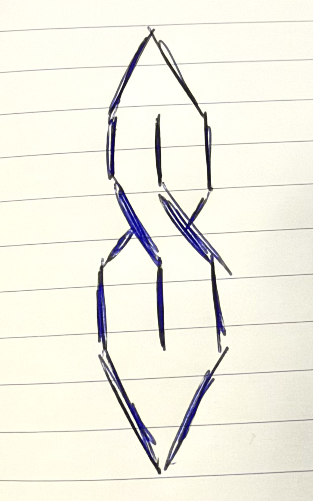

Where do you personally stand in relation to creativity?

The need to express something new or communicate in a way that allows me to process feelings or complex emotions is usually tied to my creativity and I definitely feel that urge or itch when I'm away from creating for too long. It's become central to who I am as a person and is both how I make my living and work as an educator.
What is it about it that's led to its place in your life?
I feel that ever since I was a child I was always most calm when I was doing something "creative," whether that was drawing my favorite cartoon characters, making flipbook animations, or coming up with my own little film scripts.
What pulls you toward it, keeps you in it, or keeps you at a distance?
I think creativity is so key to my life because it allows me to express things within myself that may not be outwardly obvious to those in my life or in my sphere. I can also tell when I need to either reevaluate or change things in my life when I feel little or no urge to create.